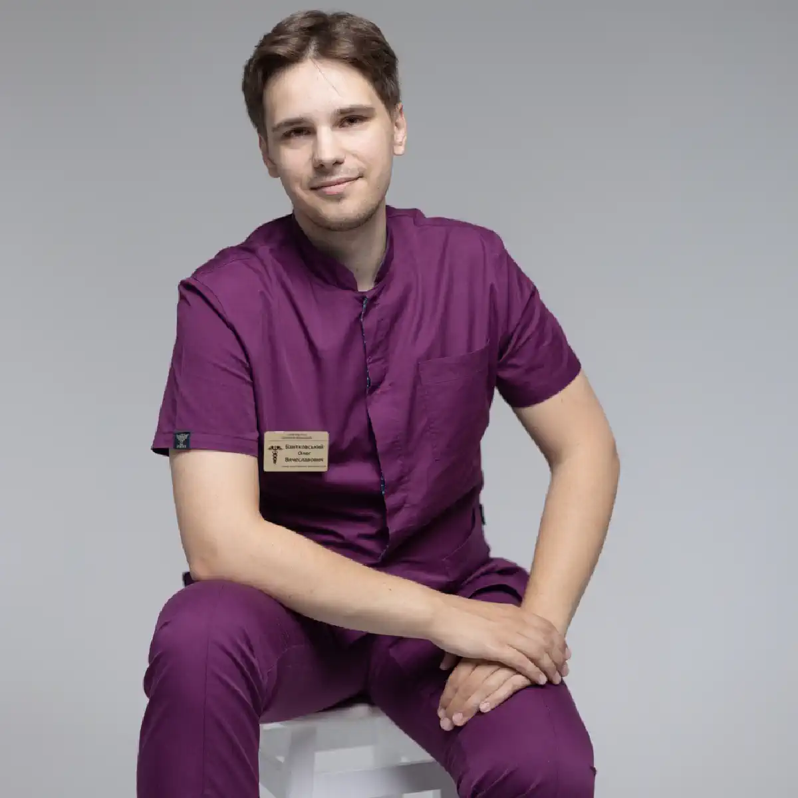

+38(068) 79 72 782
+38(068) 79 72 782Крапельниця від алкоголю Чугуїв
Знімаємо похмілля за один сеанс


Безкоштовна консультація, працюємо цілодобово 24/7
Знімаємо похмілля за один сеанс
Алкогольна інтоксикація або запій — це серйозне випробування для організму, яке потребує негайного та професійного втручання. При зловживанні спиртними напоями печінка, нирки, серце та нервова система зазнають колосального навантаження. Це проявляється не лише класичними симптомами — головним болем, нудотою, слабкістю, безсонням і дратівливістю, — але й більш глибокими порушеннями: підвищенням артеріального тиску, порушенням серцевого ритму, зневодненням організму та ослабленням імунної системи. Тривалий запій може призвести до серйозних ускладнень, включаючи гострі панкреатити, серцеві напади та неврологічні розлади.
Крапельниця від алкоголю в Чугуєві — це сучасний метод швидкого та безпечного відновлення організму, який дозволяє комплексно усунути наслідки інтоксикації. Під час процедури лікар вводить спеціальні розчини, насичені необхідними електролітами, вітамінами та детоксикаційними компонентами, що сприяє ефективному виведенню токсинів з організму. Завдяки цьому відновлюється водно-електролітний баланс, нормалізується робота внутрішніх органів, покращується самопочуття, повертається енергія та зменшується відчуття втоми. Крапельниця від алкоголю в Чугуєві — це не просто тимчасове полегшення симптомів похмілля, а повноцінна професійна допомога, яка дозволяє безпечно перервати запій, відновити здоров’я та запобігти розвитку серйозних ускладнень, пов’язаних із хронічним вживанням алкоголю. Регулярне звернення за такою допомогою за потреби дозволяє зберегти здоров’я та якість життя на високому рівні.
Алкогольна інтоксикація проявляється як на фізичному, так і на психоемоційному рівні. Нудота, запаморочення, тремор, тахікардія та сильна слабкість — це лише зовнішні ознаки того, що організм зазнав серйозного навантаження. Внутрішні органи, такі як печінка, нирки, серце та мозок, уже перебувають у стані стресу, що може призвести до порушення обміну речовин, зневоднення, збою серцевого ритму та зниження імунного захисту. При тривалому вживанні алкоголю інтоксикація здатна викликати серйозні ускладнення, включаючи панкреатит, інсульти та ушкодження нервової системи.
Крапельниця від алкоголю — це сучасний і безпечний метод медичної допомоги, який дозволяє швидко стабілізувати стан пацієнта. Спеціальні розчини вводяться внутрішньовенно, що забезпечує максимально ефективне очищення організму від токсинів і продуктів розпаду алкоголю. У результаті нормалізується артеріальний тиск, знижується навантаження на серце, зникають нудота та головний біль, відновлюється сон і психоемоційний стан. Процедура особливо ефективна при похміллі та на початкових стадіях запою, коли важливо не лише зняти неприємні симптоми, але й підтримати роботу життєво важливих органів. Крім того, крапельниця допомагає відновити водно-електролітний баланс, насичує організм вітамінами та мінералами, зміцнює імунітет і покращує загальне самопочуття.
Варто зазначити, що курс процедур проводиться під контролем досвідченого нарколога, який індивідуально підбирає склад крапельниці залежно від стану пацієнта, тривалості вживання алкоголю та наявності супутніх захворювань. За потреби лікар може додатково призначити препарати для нормалізації роботи серця, печінки або поліпшення сну. Після виходу із запою за допомогою крапельниці пацієнти відзначають не лише фізичне полегшення, але й психологічне відновлення: знижується тривожність, стабілізується настрій, поліпшуються концентрація та увага. Це особливо важливо, оскільки психоемоційний стан безпосередньо впливає на подальшу мотивацію до відмови від алкоголю та профілактику рецидивів. Таким чином, крапельниця від алкоголю — це комплексне рішення, яке дозволяє безпечно та ефективно впоратися з наслідками інтоксикації, відновити роботу організму та створити умови для подальшого лікування залежності. Своєчасне звернення по професійну допомогу мінімізує ризик ускладнень і сприяє швидшому поверненню до повноцінного, здорового життя.
Принцип дії крапельниці від алкоголю ґрунтується на комплексному та багатогранному впливі розчинів на організм. Внутрішньовенне введення дозволяє доставляти необхідні речовини безпосередньо в кров, оминаючи шлунково-кишковий тракт. Це забезпечує швидке всмоктування, миттєву дію та максимальну ефективність, чого неможливо досягти при прийомі таблеток або народних засобів. Розчини, що використовуються в крапельниці, впливають на організм одразу в кількох напрямках:
Результати процедури відчуваються вже через 20–40 хвилин. Пацієнти відзначають значне полегшення: зникає головний біль, зменшується нудота, нормалізується тиск, стабілізується серцевий ритм, поліпшується сон і психоемоційний стан. Поступово повертається ясність мислення, поліпшується концентрація, знижується відчуття тривоги та дратівливості, а загальне самопочуття приходить у норму.
Крапельниця від алкоголю складається з ретельно підібраних компонентів, які впливають на організм комплексно та допомагають безпечно вийти із запою або зняти похмілля. Кожна складова виконує свою важливу функцію, забезпечуючи швидке та ефективне відновлення.
Кожен склад крапельниця від похмілля підбирається індивідуально залежно від стану пацієнта, тривалості запою, рівня інтоксикації та супутніх захворювань. Такий персоналізований підхід дозволяє максимально ефективно впоратися з наслідками алкогольного отруєння, мінімізувати ризики ускладнень і забезпечити безпечне відновлення організму. Після процедури пацієнти відзначають значне покращення самопочуття вже через 20–40 хвилин: зникають головний біль і нудота, стабілізується тиск і серцевий ритм, відновлюється психоемоційний баланс. Регулярне звернення до таких методів дозволяє не лише безпечно вийти із запою, але й підтримувати здоров’я, знижуючи ризик повторних епізодів інтоксикації.
Вартість крапельниці від алкоголю в Чугуєві починається від 2199 грн.
Навіть одноразове зловживання алкоголем може викликати сильне похмілля, яке супроводжується зневодненням, головним болем, слабкістю, нудотою, підвищеною дратівливістю та тривожністю. Похмільний синдром — це результат накопичення в організмі токсинів і продуктів розпаду алкоголю, порушень водно-сольового та електролітного балансу, а також перевантаження печінки, нирок і серцево-судинної системи. Прокапатися від похмілля слід, коли симптоми виражені яскраво і самостійно полегшити стан не вдається. У таких випадках самостійне відновлення за допомогою народних засобів або домашніх методів часто не дає ефекту, а в окремих ситуаціях може бути небезпечним.
Втручання кваліфікованого нарколога гарантує індивідуальний підбір складу розчину залежно від стану пацієнта, ступеня інтоксикації та супутніх захворювань. Розчини включають детоксикаційні компоненти, вітаміни, гепатопротектори та седативні препарати, які прискорюють виведення токсинів, нормалізують роботу серця і печінки, знижують абстинентний синдром, відновлюють сон і психоемоційний фон. Завдяки професійному прокапуванню від інтоксикації мінімізується ризик ускладнень, які можуть виникнути при похміллі: тахікардія, панкреатит, судоми, сильне зневоднення або стрибки тиску. Такий підхід дозволяє не лише швидко відновити самопочуття, але й підготувати організм до подальшого відновлення, знижуючи навантаження на внутрішні органи і запобігаючи повторним епізодам інтоксикації.
Тривалий запій чинить колосальний вплив на організм, викликаючи не лише виражену фізичну втому, але й глибокі порушення роботи внутрішніх органів. Постійне вживання алкоголю призводить до виснаження енергетичних і вітамінних ресурсів, порушення обміну речовин, зневоднення і значної слабкості. Печінка і нирки перевантажені токсинами, які накопичуються в крові та ушкоджують клітини, серцево-судинна система працює з підвищеним навантаженням, а нервова система відчуває хронічний стрес, що проявляється тривожністю, дратівливістю, порушенням сну і зниженням когнітивних функцій. Тривалий вплив алкоголю також підвищує ризик розвитку серйозних захворювань: панкреатиту, гіпертонії, аритмій, серцевої недостатності, цирозу печінки і неврологічних розладів. Крапельниця від алкоголю — це сучасний і безпечний спосіб вийти із запою і відновити здоров’я організму комплексно. Процедура дозволяє одночасно вирішувати кілька ключових завдань:
Крапельниця забезпечує комплексний вплив на фізичне і емоційне здоров’я, знижує ризики ускладнень і створює основу для подальшого лікування алкогольної залежності і профілактики повторних запоїв.
Крапельниця від алкоголю — це не просто спосіб зняти гострі симптоми інтоксикації, але й важливий перший крок на шляху до комплексного лікування алкоголізму. При тривалому зловживанні спиртним організм виснажується, розвивається фізична і психічна залежність, порушуються обмін речовин, робота внутрішніх органів і нервової системи. Поступово погіршується пам’ять, знижується працездатність, посилюються тривожність та емоційна нестабільність.
Крапельниця від запою допомагає стабілізувати стан пацієнта, знизити вираженість абстинентного синдрому і зменшити фізичну залежність, створюючи умови для безпечного переходу до подальшого відновлення. Завдяки внутрішньовенному введенню лікарські речовини починають діяти практично одразу: зменшується слабкість, тремор, серцеве навантаження, відновлюється сон і покращується психоемоційний фон. Процедура дозволяє організму швидше вивести токсини і продукти розпаду алкоголю, відновити водно-сольовий баланс, нормалізувати роботу печінки, серця і нирок, а також покращити діяльність нервової системи. Це створює міцну основу для подальшого лікування, оскільки організм стає більш стійким до стресу, а обмінні процеси поступово приходять у норму. Пацієнт відчуває фізичне полегшення, зникає відчуття тривоги і внутрішньої напруги, що підвищує мотивацію до відмови від алкоголю і формування тверезого способу життя.
Крапельниця також відіграє важливу роль у профілактиці ускладнень, які можуть виникнути при різкій відмові від уживання спиртних напоїв. Знижується ризик судомних станів, аритмій, стрибків тиску і загострення хронічних захворювань. Медичний контроль під час процедури дозволяє своєчасно коригувати стан пацієнта і підбирати оптимальну терапевтичну схему. Однак важливо розуміти, що крапельниця не усуває психологічну залежність і не є самостійним лікуванням алкоголізму. Вона виступає підготовчим етапом, після якого рекомендується продовжити терапію — пройти консультацію нарколога, психотерапевта, розглянути програми реабілітації або методи кодування залежно від стану і мотивації пацієнта.
Багато людей віддають перевагу відновленню після сильного похмілля в домашніх умовах, оскільки це забезпечує максимальний комфорт і конфіденційність. Прокапування від алкоголю на дому дозволяють пацієнту перебувати у звичній обстановці, що знижує стрес і тривожність, які часто супроводжують похмілля і абстинентний синдром. Лікар-нарколог приїжджає до пацієнта, оцінює його стан і індивідуально підбирає склад розчину, враховуючи рівень інтоксикації, тривалість уживання алкоголю і стан внутрішніх органів. Такий підхід гарантує безпечне і ефективне відновлення: токсини виводяться швидше, водно-сольовий баланс нормалізується, зменшується слабкість, нудота і головний біль.
Прокапування від інтоксикації на дому особливо ефективні для людей з вираженим абстинентним синдромом, порушеннями сну, підвищеною тривожністю або тахікардією. Лікар також контролює серцевий ритм, тиск і загальне самопочуття пацієнта під час процедури, що мінімізує ризик ускладнень, таких як панкреатит, судоми або сильне зневоднення. Окрім зняття гострих симптомів, крапельниця від алкоголю на дому допомагає підготувати організм до подальшого відновлення: підвищується загальний тонус, покращується робота печінки і нирок, нормалізується робота нервової системи, відновлюється сон і апетит. Такий метод є безпечним і ефективним способом швидкого виходу з похмілля без необхідності відвідувати клініку, забезпечуючи професійний контроль і індивідуальний підхід до кожного пацієнта.
Після процедури крапельниці від алкоголю організм поступово приходить у норму, і починається комплексне відновлення роботи всіх систем. Поступово знижується інтоксикаційне навантаження, поліпшуються обмінні процеси, нормалізується діяльність внутрішніх органів і нервової системи.
Ці позитивні зміни не лише покращують самопочуття одразу після процедури, але й створюють базу для подальшого відновлення організму. Крапельниця знижує ризик повторного запою, підтримує роботу внутрішніх органів, зміцнює нервову систему і допомагає стабілізувати психоемоційний стан. Комплексний вплив процедури забезпечує м’який і безпечний вихід з інтоксикації, допомагає пацієнту швидше повернутися до нормального життя і стає важливим етапом на шляху до відмови від алкогольної залежності та зміцнення здоров’я в довгостроковій перспективі.
На думку наркологів, крапельниця від алкоголю — це безпечний і ефективний метод зняття інтоксикації і виходу із запою. Лікарі відзначають, що своєчасне втручання знижує ризик ускладнень, прискорює відновлення організму і є необхідним кроком при регулярному зловживанні алкоголем. Досвідчений нарколог підбирає склад розчину індивідуально, враховуючи стан печінки, серця, тиск і загальний рівень інтоксикації.
Телефон для консультації: +38(050-021-69-57)
Так, ми суворо дотримуємося повної конфіденційності на всіх етапах лікування. Інформація про пацієнта, діагноз та проходження терапії не передається третім особам. Звернення до нас не тягне за собою постановку на облік. Ви можете бути впевнені у безпеці та анонімності.
Програма лікування розробляється індивідуально після консультації з фахівцем. Враховуються вид залежності, її тривалість, фізичний та психологічний стан пацієнта. Такий підхід дозволяє підвищити ефективність терапії та знизити ризик зриву. Ми не використовуємо шаблонні рішення.
Так, ми супроводжуємо пацієнтів і після основного курсу лікування. Проводяться консультації, рекомендації щодо адаптації та профілактики рецидивів. За потреби можлива подальша психологічна підтримка. Це допомагає зберегти результат та повернутися до повноцінного життя.
Анонимно

Никакими усилиями самостоятельно я не смогла преодолеть запой, и наступала ломка, сопровождаемая повышенным давлением и пульсом. Тогда я решила обратиться за помощью в клинику. Врачи оказали мне неоценимую поддержку! Уже прошел месяц, и я не только не употребляю алкоголь, но даже не испытываю к нему желания!
Анонимно
Могу с уверенностью порекомендовать данный центр для тех, кто ищет помощь при выводе из запоя. Я неоднократно обращался к ним и могу сказать, что цена соответствует качеству услуг. После проведения капельницы в клинике, вся тяга к алкоголю проходит, и я чувствую себя гораздо лучше. Это действительно эффективный метод, и я благодарен клинике за их профессионализм и заботу!
Анонимно
Неоднократно я пытался бросить алкоголь самостоятельно, но каждый раз уговаривал себя продолжать. Я сначала ограничивался одной бутылкой в день, потом двумя, и в итоге вновь попадал в запой. Но в итоге, я смог прекратить употребление алкоголя только после того, как обратился в центр Амбрелла и заказал у них услугу вывода из запоя. Уже не пью 3 месяца и удалось полностью восстановиться. Благодарю врача который меня вел - Алексея Валерьевича.
Анонимно
Здравствуйте! Я хотел бы выразить свою искреннюю благодарность клинике за быстрое и профессиональное освобождение моего мужа пивного рабства! Ранее у меня уже не было никаких надежд на его выздоровление. Однако, благодаря вашим перспективным методам лечения, мы теперь идем к полному отказу от алкоголя. Вы дали нам новую надежду и оказали неоценимую помощь! Спасибо вам за все!
Анонимно
Я долгое время страдал от запоев и не мог справиться с этой проблемой. Однако, когда я обратился в этот центр, они быстро помогли мне вернуться на ноги, и самое главное - предоставили мне возможность не возвращаться к запоям. Уже почти полгода я не испытываю запоев! Это для меня настоящее чудо, я никогда не думал, что смогу так преодолеть свои проблемы. Большое спасибо центру Амбрелла!
Анонимно
Благодарю ваш центр Амбрелла за оперативное и высококачественное лечение! Женский алкоголизм - это настоящее горе, с которым невозможно справиться в одиночку. Я уже потеряла надежду, но благодаря вашей помощи, она вернулась ко мне! Отдельная благодарность врачу Станиславу Вячеславовичу, а также благодарность Богу за то, что он послал мне такое чудо как ваша центр! Спасибо вам всем!
Анонимно
Хочу выразить благодарность врачу Владиславу Алексеевичу за то, что вы избавили меня от этого ужаса. Я уже был в отчаянии, перепробовал множество клиник и центров, но только здесь я наконец получил настоящую помощь! Алкоголь полностью разрушил меня, и если бы не ваша помощь, я, возможно, уже не был бы жив. С вами я смог вернуть себе жизнь и буду благодарен вам всегда!
Номер телефону:
+380 (68) 797 27 82
+380 (50) 021 69 57
Адресу наркологічного центра вашого міста уточнюйте за
телефоном
Працюємо: Київ, Одеса, Львів, Харків, Дніпро, Запоріжжя,
Черкасах, Чугуєві, Чорноморську, Кам'янському
Telegram: t.me/umbrellaplus
Графік работы: Цілодобово